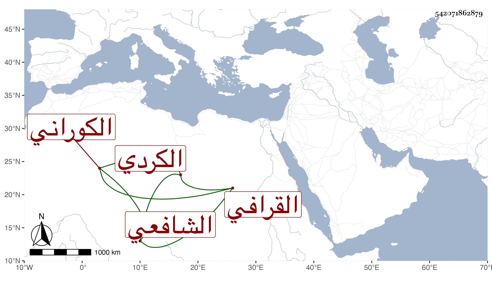

0902Sakhawi.DawLamic.ITO20230111-ara1.EIS1600.542071862879
Biography ID: 542071862879
694
أحمد بن يوسف بن عبد الله بن عمر بن علي بن خضر الشهاب بن الجمال الكردي الكوراني الأصل القرافي الشافعي أخو التاج محمد ويعرف بابن الشيخ يوسف العجمي . تسلك بأبيه واشتغل وفضل ونظم المنهاج الأصلي وعمل حين صلى ابن أخيه علي بالناس خطبة بليغة ضمنها سور القرآن سمعتها من على الذي عملها لأجله وأخبرني أنه أنشأ لأجل أخيه عبد الله لكونه ألثغ خطبة خالية من الراء وأنه مات في سنة عشر بالبحرارية ودفن هناك رحمه الله .
